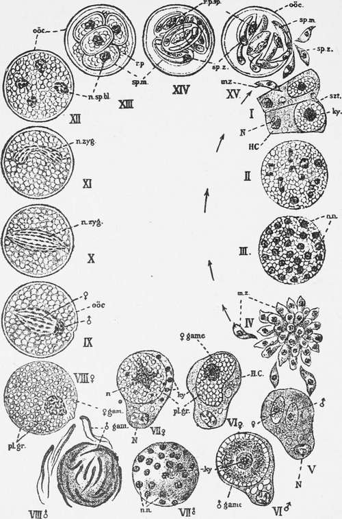

The Mosquito-Malarial Cycle. Part 2
Description
This section is from the book "Malaria, Influenza And Dengue", by Julius Mennaberg and O. Leichtenstern. Also available from Amazon: Malaria, influenza and dengue.
The Mosquito-Malarial Cycle. Part 2
6. The spore, in its turn, undergoes subdivision, forming a number (eight) of spindle shaped bodies termed sporozo'ites; there is here again a "residuum," in this case termed the "sporal residuum," while that of the gametocyte is termed the "cystal residuum."
7. It is these sporozoites which, when they are set free by the destruction of the sporocyst, give rise to an infection in a new host. They are freely motile, and can penetrate the cells of the host. The sporocysts containing sporozoites are, in the case of the gregarine, Monocystis, spindle shaped, and were originally known as psendonavicellae. They may be found with great ease in the testes of the common earthworm (Lumbricus terrestris). This cycle maybe expressed by the following notation *:
Sporozoite -> trophozoite -> gametocyte (sporont) X n gametes Sporozoite -> trophozoite -> gametocyte (sporont) X n gametes } + = n zygotes (sporoblasts) ->- n spores X 8 n sporozoites. This cycle is then a single one, viz., that of producing a new infection. It is called monogenetic, in contradistinction to that of other Sporozoa which are digenetic-where there are two cycles, the one producing auto infection, the second, a new infection of a fresh host. This monogenetic cycle is one of sporogony or amphigony. It is the one we have just traced. The cycle of auto infection, of schizogony, of monogony, the asexual cycle, the endogenous cycle, for by all these various terms it is known, we shall first discuss, and then follow out, the relationship of the two cycles to each other in a typical Coccidian. In the asexual cycle, then, a parasite divides into two or more parts by fission, or gives rise, without any complicated process similar to that we have followed above, into a number of spores, gymnospores surrounding a residuum. The parasite that gives rise to these naked spores is known as a schizont, in contradistinction to a sporont, and the "spores" themselves are termed merozoites, in contradistinction to sporozoites, the final stage, as we have seen, in sporogony. By medical usage, at any rate, the term spore has long been applied to the small nucleated body into which a parasite (malarial) divides in the blood, but it should be clearly understood that it is not the same as the spores of the sexual cycle.
The first stage is that of a nucleated body occupying the epithelial cell; growth proceeds; the parasite gradually destroys the cell, so that but little of it is eventually left. The mature parasite or trophozoite proceeds to subdivide by schizogony, and so is termed a schizont. A number of nucleated bodies are formed-merozoites. Each of these, when set free from the containing residue of epithelial cell, is capable of infecting a fresh cell of the same host, and so an auto infection is produced. The merozoite having gained the fresh cell, gains also a new name, trophozoite, which, in its maturity, is termed a schizont, and so the cycle is repeated until an immense infection of the host takes place, and, possibly owing to the conditions now being unfavorable, reproduction or sporogony-the sexual cycle-supervenes. This takes place in the following way: A merozoite (in fact, the young parasite), instead of becoming a full grown trophozoite - i. e., a schizont - grows into two different sexual cells, termed gametocytes; the male cell is a microgametocyte and the female cell a macrogametocyte. We need not discuss here the differences between these: it will be sufficient to say that they can be readily differentiated. These give rise to microgametes and macro gametes. By this time the macrogamete and microgametes are free in the gut. The female cell, or macrogamete, attracts the male elements, or microgametes, and eventually one penetrates the female cell. The product of the union thus of a male and female cell is known as a zygote. Around the zygote is now secreted a sheath, which is termed the oocyst. The zygote is thus a nucleated cell resulting from the fusion of male and female elements. Its nucleus now proceeds to divide, giving rise to a number of sporoblasts and a residuum. Around each sporoblast a cyst is formed, and so we have, as in the gregarine, a sporocyst containing a spore, or " a spore " simply. Further, the spore also subdivides, giving rise to sporozoites, two or more. The sporozoites, when set free from the sporocyst, produce the new infection of another host, and so we arrive at the first stage, where a sporozoite is penetrating an epithelium cell. This cycle may be expressed in the following way:
>*->signifies becomes; X signifies a multiplication of' individuals; } + signifies conjugation and fusion of gametes.
Fig. 3.-Life cycle of a Coccidian (after Schaudinn and Minchin).
I, Epithelial cell, showing penetration of a merozoite and its growth into a schizont; II, division of the nucleus of the schizont; III, formation of numerous daughter nuclei; IV, formation of merozoites; V, an epithelial cell containing a macrogametocyte and microgametocyte VI and VII (?), stages in growth of the macrogametocyte; VI and VII (c?) stages in growth of the microgametocyte; VIII, formation of microgametes (flagella); VIII (?), mature macrogamete, emitting a cone of reception; IX, zygote or oocyst; X, complete fusion of male and female nuclei; XI and XII, subdivision of the nucleus of the zygote; XIII, formation of sporoblasts; XIV, formation of sporocysts containing sporozoites; XV, escape of sporozoites.
Sporozoite -> schizont X merozoites -> schizonts X merozoites -> gametocytes X n gametes } + = zygotes x m sporesX m n sporozoites.
gametocytes ->gametes }
We may now follow out finally the life cycles of some of the Hemosporidia, and we shall do so in the same schematic way, leaving to a later stage a description of the details of the actual process. The Hemosporidia differ from the rest of the Coccidia in the special mode by which the new infection is conveyed. While in the Sporozoa generally the spores which escape from one host are usually ingested by the fresh host, in the case of the malaria parasite the new infection is transmitted through the agency of the mosquito.
Continue to:
Tags
mosquito, malaria, influenza, dengue, symptoms, outbreaks, diseases, hemoglobinuria, infections